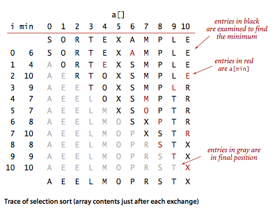
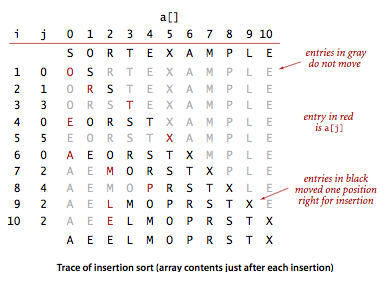
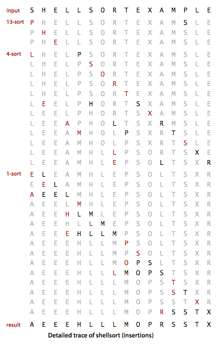

基本排序算法 - basial sorting algorithms with java implementation
我们关注的主要对象是重新排列数组元素的算法， 其中每个元素都有一个主键。排序算法的目的就是将所有元素的主键按照某种方式排列(通常按照大小或是字母顺序)。
在java中元素通常都是对象，对主键的抽象描述则是通过一种内置的机制(Comparable接口)来完成的。
排序算法类模板
1 | public class Example { |
这个类展示的是数组排序实现的框架。代码中实现的排序方法适用于任意实现了Comparable接口的数据类型。
验证
无论数组的初始状态是什么，我们都无法确保排序算法都能成功。所以谨慎起见，我们会在测试代码中添加一条语句assert isSorted(a);来确保排序后的数组都是有序的。
运行时间
评估算法的性能。首先，要计算各个排序算法在不同的随机输入下的基本操作的次数(包括比较和交换，或者是读写数组的次数)。
排序成本模型 : 在研究排序算法时，我们需要计算比较和交换的数量。
对于不交换元素的算法，我们会计算访问数组的次数。
额外的内存使用
排序算法的额外内存开销和运行时间是同等重要的。排序算法可以分为两类:
- 除了函数调用所需的栈和固定数目的实例变量之外无需额外内存的原地排序算法。
- 需要额外内存空间来存储另一份数组副本的其他排序算法。
数据类型
上面的排序模板适用于实现了Comparable接口的数据类型。例如, java中封装数字类型的Integer、Double、以及String和其他许多高级数据类型。
而对于自己创建的数据类型，我们是要实现Comparable接口就能够保证能够使用排序算法进行排序。
自定义数据类型样例:
1 | public class Date implements Comparable<Date> { |
选择排序
首先，找到数组中最小的那个元素，其次，将它和数组的第一个元素交换位置(如果第一个元素就是最小的元素那么它就和自己交换)。 再次，在剩下的元素中找到最小的元素，将它与数组的第二个元素交换位置。如此往复，直到整个数组排序完成。不断地选择剩余元素中的最小者。
命题 A: 对于长度为 的数组，选择排序需要大约 次比较和 次交换。
证明： 可以通过算法的排序轨迹来证明，用一张的表格来表示排序的轨迹，其中每个非灰色字符都表示一次比较。表格中大约有一半的元素不是 灰色的 – 即对角线和其上部分的元素。对角巷上的每个元素都对应真一次交换。通过查看代码我们可以更精确地得到， 到 的任意 都会 进行一次交换和 次比较，因此 总共有次交换以及 。
算法轨迹图示（from algs4)：

算法实现:
1 | public class Selection { |
插入排序
与选择排序一样，当前索引左边的所有元素都是有序的，但他们的最终位置不确定，为了给更小的元素腾出空间，它们可能会移动。当索引到达数组的右端时，数组排序就完成了。
和选择排序不同的是，插入排序所需的时间取决于输入中元素的初始顺序。例如对于一个很大且其中的元素已经有序（或接近有序）的数组进行插入排序将会比对随机数组或逆序数组进行排序要快得多。
命题 B : 对于随机排列的长度为 且主键不重复的数组, 平均情况下插入排序需要 ~ 次比较以及 次交换。最坏情况下需要 ~N^2 /2 次比较和 ~ 次交换，最好情况下需要次比较和次交换。
证明： 和证明命题A一样，通过一个的算法轨迹表可以很容易就得到交换和比较的次数。最坏的情况下对角线之下所有元素都需要移动位置，最 好情况下都不需要。对于随机排列的数组，在平均情况下每个元素都可能向后移动半个数组的长度 ，因此交换总数是对角线之下的元素总数的二分之。 比较的总次数是交换的次数加上一个额外的项，该项为 减去被插入的元素正好是已知的最小 元 素的次数。在最坏情况下（逆序数组），这一 项相对于总数可以忽略不计；在最好的情况下（数组已经有序），这一项等于。
插入排序算法轨迹图示（from algs4):

算法实现:
1 | public class Insertion { |
附加：
对于插入排序，我们要考虑的更一般情况是部分有序的数组。
倒置指的是数组中的两个顺序颠倒的元素。比如EXAMPLE中有11对倒置：
1 | E-A X-A X-M X-P X-L X-E |
如果数组中倒置的数量小于数组大小的某个倍数，那么我们说这个数组是部分有序的。
几种典型的部分有序的数组:
- 数组中每个元素距离它的最终位置不远；
- 一个有序数组接一个小数组；
- 数组中只有几个元素位置不正确。
插入排序对这样的数组很有效，而选择排序则不然。当倒置的数量很少时，插入排序比大部分的其他排序算法都要快。
命题 C: 插入排序需要的交换的操作和数组的中倒置的数量相同，需要的比较次数大于等于倒置的数量，小于等于倒置的数量加上数组的大小再减一。
证明： 每次交换都改变了两个顺序颠倒的元素的位置，相当于减少了一对倒置，当倒置数量为0时，排序就完成了。每次交换都对应着一次比较，且 到之间的每个都可能需要一次额外的比较(在a[i]没有达到数组的左端时)。
[算法改进] : 大幅提高插入排序的速度，在内循环中将较大的元素都向右移动而不是总是交换两个元素(这样访问数组的次数就能减半)。
1 | public static void sort(Comparable[] a) { |
希尔排序
希尔排序是基于插入排序的快速排序算法.
对于规模乱序数组插入排序很慢，因为它只会交换相邻的元素，因此元素只能一点一点地从数组的一端移动到另外一端。
希尔排序为了加快速度简单地改进了插入排序 —— 交换不相邻的元素以对数组的局部进行排序，并最终使用插入排序将局部有序的数组排序。
希尔排序的思想:使任意间隔为h的元素都是有序的。
这样的数组称为h有序数组。对于任意以1为结尾的h序列（递增序列），我们使用它都能将数组排序。
算法实现： —— 使用的递增序列来自 algs4.
1 | public class Shell { |
[递增序列的选择] : 算法的性能不仅取决于h，还取决与h之间的数学性质。目前还没有人能证明某个递增序列是"最好的"。以上算法实现使用的递增序列（使用序列 ,从N/3开始递减至1.）的计算和使用都很简单且和复杂的递增序列的性能接近。
算法轨迹图例 – example (from algs4):

实际应用: 对于中等大小的数组它的运行时间是可以接受的且它的代码量小，不需要额外的内存空间。所以在面临一个排序问题而没有系统排序函数可用时，可先用希尔排序，然后再考虑是否将它替换为更加复杂的排序算法。
[算法改进] : 由于希尔排序是基于插入排序，所以我们可以参照插入排序的改进，对希尔排序进行改进 – 把内循环中较大的元素右移而不是交换两个元素。
1 | public static void sort(Comparable[] a) { |
附加 —— 冒泡排序
冒泡排序相对比较简单，这里直接给出它的实现:
1 | public class Bubble { |
算法分析: 对于冒泡排序，最坏情况下，算法需要进行N-1趟排序，总的数组元素比较的次数为 ~ ， 总的交换次数为数组中倒置的数量。
NOTICE
本文中，涉及的算法详细实现和使用，请移步到github查看。